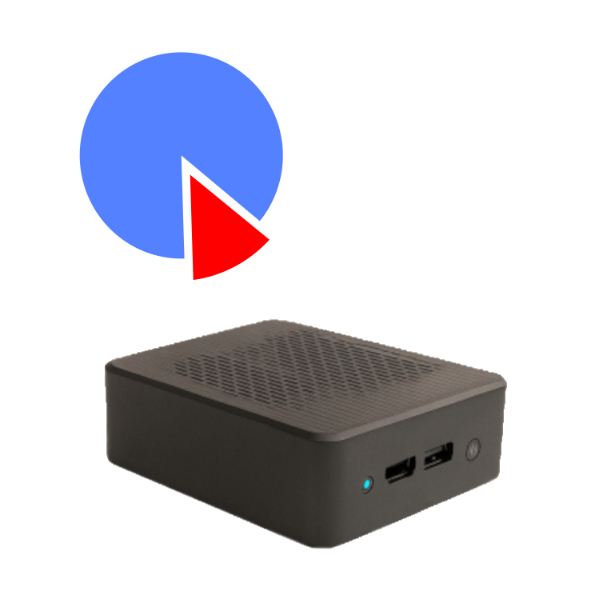
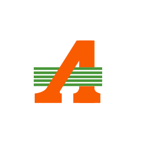

Destaque
QUIX PDV
Ao chegar em um estabelecimento com QUIX PDV, o cliente pode realizar seus próprios pedidos sem a necessidade de um atendente. Chegou, escaneou o QR Code e fez seu pedido!
Ver resumo do QUIXGabriel Santana | Profissional de TI
Após muito trabalho e pesquisa, desenvolvi o QUIX PDV, um sistema independente de ponto de venda e autoatendimento local, que permite aos clientes realizarem seus próprios pedidos e atendimentos no estabelecimento, sem a necessidade de um atendente.
Olá! Meu nome é Gabriel Santana e sou um profissional de TI apaixonado por tecnologia e inovação. Aqui você encontrará informações sobre minha experiência, meus projetos e as formas de entrar em contato comigo.
Quero saber mais sobre o QUIX PDV
Olá! Sou Gabriel Santana, profissional de TI com experiência em desenvolvimento web, suporte técnico e consultoria tecnológica.
Gosto de transformar ideias em soluções práticas, criando sistemas e ferramentas que resolvem problemas reais e proporcionam uma melhor experiência para usuários e empresas.
Sou entusiasta do software livre e defensor de tecnologias de código aberto, como Linux, por acreditar que a colaboração e o compartilhamento de conhecimento impulsionam a inovação.
Estou sempre aprendendo, explorando novas tecnologias e buscando oportunidades para evoluir profissionalmente e contribuir com projetos relevantes.
Deslize para o lado para visualizar os projetos.
Ao chegar em um estabelecimento com QUIX PDV, o cliente pode realizar seus próprios pedidos sem a necessidade de um atendente. Chegou, escaneou o QR Code e fez seu pedido!
Ver resumo do QUIXUm catálogo de produtos tecnológicos com ótimos preços e informações detalhadas sem a necessidade de grupos de redes sociais. Pensado especialmente para uso mobile e para vendas em links de afiliado.
Acessar JornalTECH
Dentro do Atacadão criei páginas de acesso que servem como um hub de informações para os colaboradores. Foi criado um específico para a equipe de TI e outro para a equipe da loja.
Acessar Vídeo demonstrativoSe você deseja entrar em contato comigo para discutir oportunidades de trabalho, parcerias ou apenas para conversar sobre tecnologia, sinta-se à vontade para me enviar uma mensagem. Estou sempre aberto a novas conexões e colaborações.